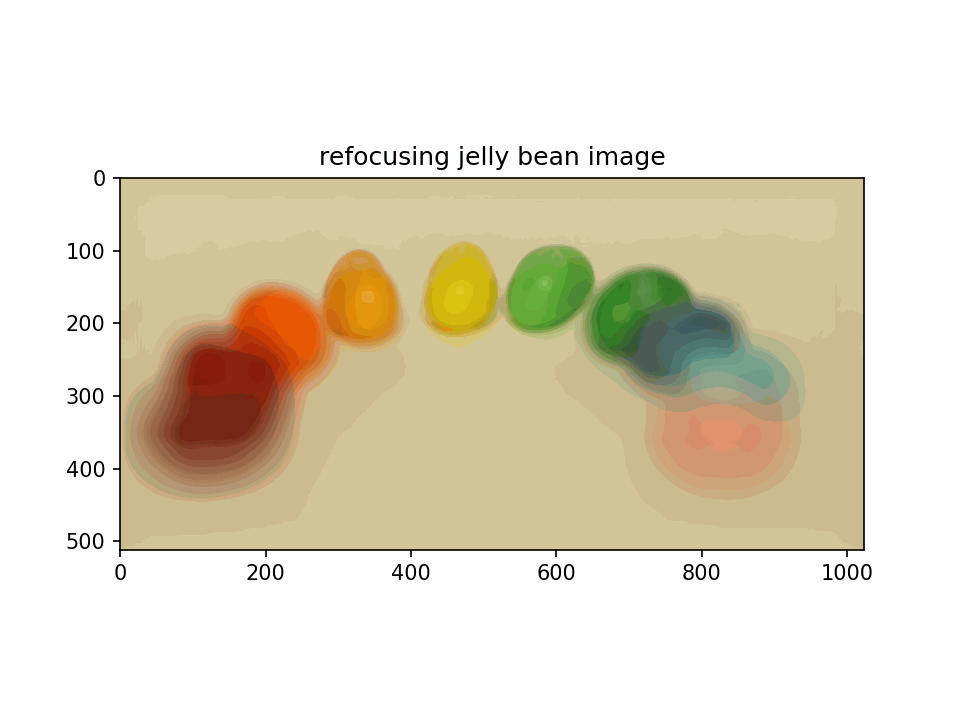
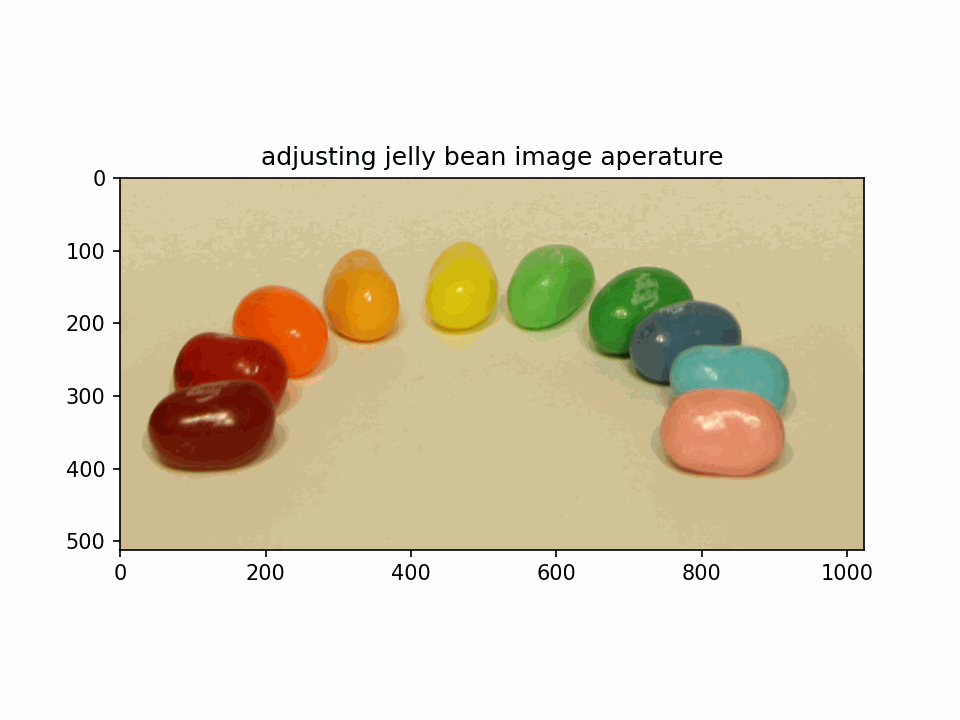
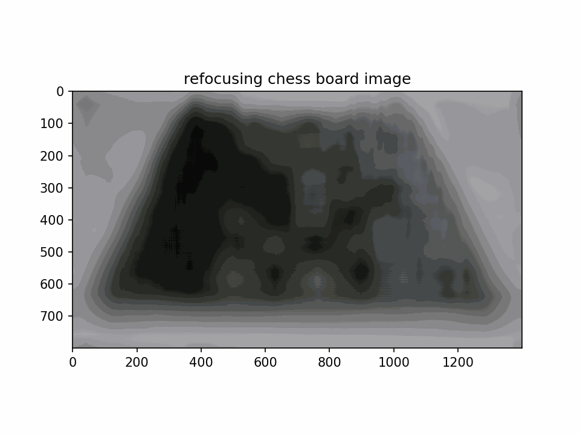
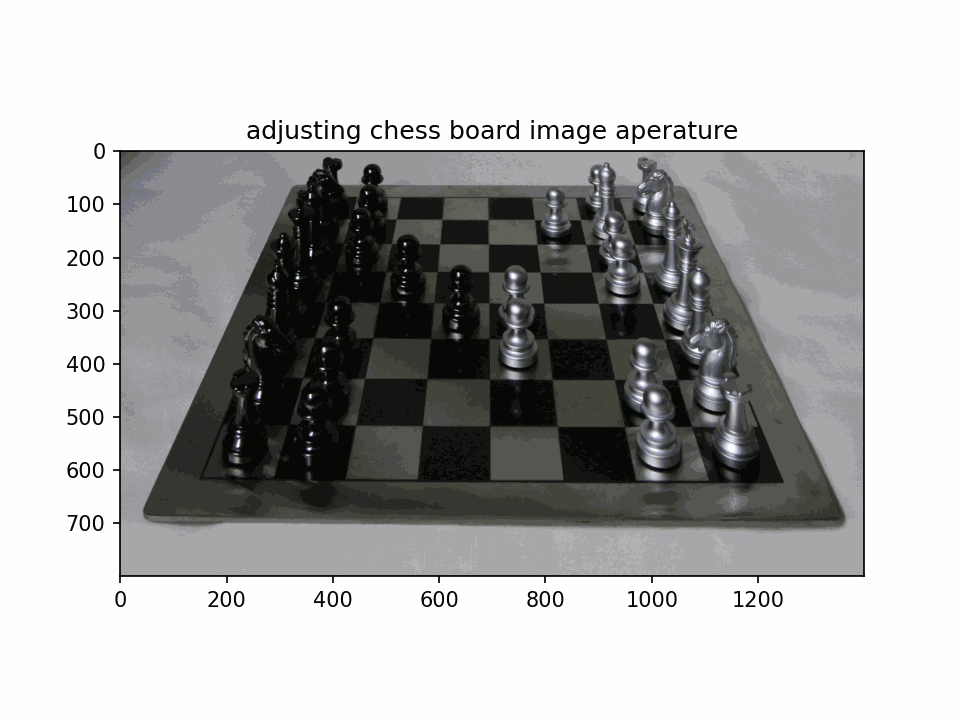

How to submit assignments for CS180/CS280A.
For each assignment, you will be required to submit two deliverables to
Gradescope (Entry Code: KZNDRJ).
Please upload a .zip adhering to the following structure:
submission.zip
├─code/
│ ├─main.ipynb # or main.py or main.m
│ ├─utils.py # generic example file, not needed
│ └─README.txt # or markdown
└─web/
├─page.pdf
└─sites.txt
1. Code
You should upload code only to Gradescope. Do not host your code publicly.
-
All of your project code should be contained in some
main.py/main.ipynb/main.m that the grader(s) can run to reproduce your
results. If you have a complex workflow, make sure to upload all the necessary files and include a
README.txt file describing how we can run your code.
-
Please be sure to appropriately comment your code so that the graders can appropriately identify where your
implementations lie and what they do.
-
Place all of your coding files in the
code/ directory. They should be distinct from your web files.
2. Webpage Report
If you do not already have a webpage set up, we recommend using GitHub Pages (tutorial).
-
You should upload a
web/ folder containing two files: page.pdf and
sites.txt.
-
page.pdf should be a PDF of your webpage (i.e. printing the page and saving it as a PDF).
-
If your page contains animations/interactivity that cannot be captured in a PDF, please note this in the
report.
- You may consider compressing the PDF
file if you hit the 100Mb size limit
(e.g. with this)
-
sites.txt should be a have two lines (and nothing else!):
-
Webpage report URL (may look like
https://[gh-user].github.io/[proj#]/ ─ or ─
https://[gh-user].github.io/[repo-name]/[proj#]/ )
-
GitHub repo URL (may look like
https://github.com/[gh-user].github.io/ ─ or ─
https://github.com/[gh-user]/[repo-name]/ )
- This must be a public repo
- NO CODE should be hosted here, or any where else public.
If you have any comments, even if they're about web and not code, please include them in ./code/README.txt
Begin Solution Lightfield Camera
DESCRIPTION: This output is the refocusing of the jelly bean image, which is done through a series of translation transformations
given a list of images, to create a an animated image of the refocusing occurring.

DESCRIPTION: This output is the adjustment of the aperature of the jelly bean image, which is once again done through a series of translations
which are then averaged to return a series of images, that, when animated, show a real time aperature adjustment derived from a series
of images.

DESCRIPTION: This output is the refocusing of the chess board image, which is done through a series of translation transformations
given a list of images, to create a an animated image of the refocusing occurring.

DESCRIPTION: This output is the adjustment of the aperature of the chess board image, which is once again done through a series of translations
which are then averaged to return a series of images, that, when animated, show a real time aperature adjustment derived from a series
of images.

End Solution Lightfield Camera
Begin Solution Eulerian Image Magnification
DESCRIPTION: Using the parameters specified from the paper, the image below is the output of a the video being ran through a Butterworth filter. I had to use an additional parameter
beta to be able to get more stable results (the issue was with the amplitude, not the period). While the use of the beta parameter shrunk the differences between various peaks
on the cumulative brightness scale, there were still inconsistencies in the output which I did not know how to correct for completely.

DESCRIPTION: Using the parameters specified from the paper, the image below is the output of a the video being ran through a Butterworth filter. I had to use an additional parameter
beta to be able to get more stable results (the issue was with the amplitude, not the period). While the use of the beta parameter shrunk the differences between various peaks
on the cumulative brightness scale, there were still inconsistencies in the output which I did not know how to correct for completely.

DESCRIPTION: Using parameters that I have experimentally determined, the image below is the output of a the video being ran through a Butterworth filter. I had to use an additional parameter
beta to be able to get more stable results (the issue was with the amplitude, not the period). While the use of the beta parameter shrunk the differences between various peaks
on the cumulative brightness scale, there were still inconsistencies in the output which I did not know how to correct for completely.

DESCRIPTION: For this output, I switched the parameters of baby2 and face to see the impact on the output data, and while the result still showed pulsation, the .gif was much
less consistent in the ebb and flow of the brightness of the image (controlled on the yiq scale before being converted back to rgb).

DESCRIPTION: For this output, I switched the parameters of baby2 and face to see the impact on the output data, and while the result still showed pulsation, the .gif was much
less consistent in the ebb and flow of the brightness of the image (controlled on the yiq scale before being converted back to rgb).

DESCRIPTION: For this output, I increased the frequency but kept the band small. There was still noticable pulsation on the resulting output video - although this pulsation was
inconsistent and appears to increase and decrease on a higher order, which I tried to control for wih a regression function somewhat successfully on given parameters, but
struggled with on changed parameters. Color was not affected since I used the YIQ scale.

DESCRIPTION: For this output, I increased the frequency and expanded the band. There was still noticable pulsation on the resulting output video - although this pulsation was
inconsistent and appears to increase and decrease on a higher order, which I tried to control for wih a regression function somewhat successfully on given parameters, but
struggled with on changed parameters. Color was not affected since I used the YIQ scale.

DESCRIPTION: For this output, I increased the frequency and expanded the band. There was still noticable pulsation on the resulting output video - although this pulsation was
inconsistent and appears to increase and decrease on a higher order, which I tried to control for wih a regression function somewhat successfully on given parameters, but
struggled with on changed parameters. Color was not affected since I used the YIQ scale.

DESCRIPTION: For this output, I increased the frequency and expanded the band. There was still noticable pulsation on the resulting output video - although this pulsation was
inconsistent and appears to increase and decrease on a higher order, which I tried to control for wih a regression function somewhat successfully on given parameters, but
struggled with on changed parameters. Color was not affected since I used the YIQ scale.

End Solution Eulerian Image Magnification